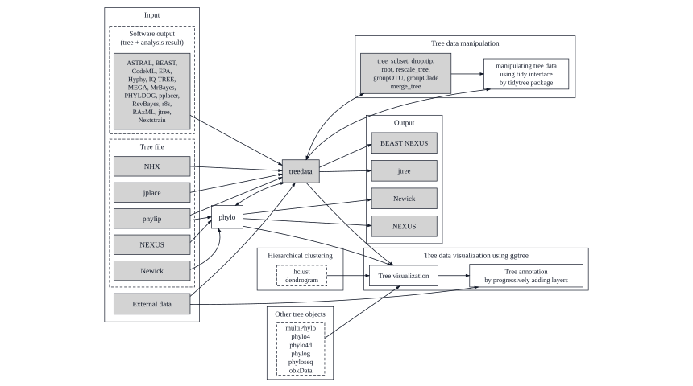
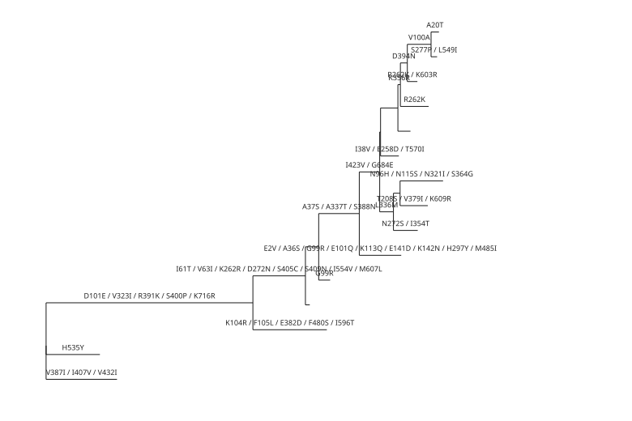
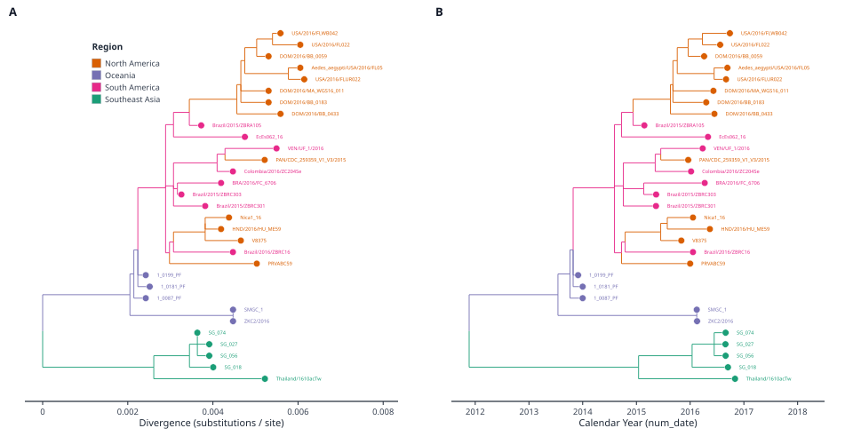

1. Importing Tree with Data
Phylogenetic trees rarely exist in isolation: evolutionary analyses pair branching topologies with divergence times, posterior probabilities, substitution rates, placement counts, or gene-level selection statistics. In ggtree-py, Phylo holds core ape-compatible structure (edge, tip_label, edge_length, node_label), while TreeData binds rich node- and branch-indexed annotations in td.data and td.extraInfo.
1.1 Overview
Standard readers in ggtree-py mirror both ape and treeio: plain Newick/Nexus files return a lightweight Phylo (or MultiPhylo), whereas BEAST, NHX, EPA/pplacer, jtree, RAxML, CodeML, and Nextstrain Auspice JSON parsers return a unified TreeData object ready for aes() aesthetic mapping.
1.2 Understanding Phylogenetic Tree Structure
A phylogenetic tree comprises tips (leaves), internal nodes representing ancestral lineages, a root node, and branch lengths encoding evolutionary divergence or time. read_tree() parses Newick strings from files or inline text=... arguments, and layers such as geom_tippoint(), geom_nodepoint(), geom_rootpoint(), and geom_label() inspect these structural elements directly.

▶ Show / Hide Python Code read_treeggtreegeom_tippointgeom_nodepoint
nwk = (
"(((virus1:0.28,virus2:0.52):0.34,((virus3:0.61,virus4:0.19):0.41,"
"(virus5:0.47,virus6:0.33):0.25):0.22):0.38,"
"((virus7:0.54,virus8:0.29):0.46,(virus9:0.31,virus10:0.64):0.18):0.44);"
)
tr = read_tree(text=nwk)
p = (
ggtree(tr)
+ geom_text(aes(x="branch", label="branch.length"), color="#6B7280", vjust=-0.45, size=2.9)
+ geom_tippoint(color="#00BA38", size=3.2)
+ geom_nodepoint(color="#619CFF", size=3.2)
+ geom_rootpoint(color="#F8766D", size=3.4)
+ geom_tiplab(offset=0.04, size=3.8)
+ geom_treescale(x=0.1, y=0.6)
+ hexpand(0.14)
)
p

▶ Show / Hide Python Code read_treeggtreegeom_tiplabgeom_label
tr = read_tree(text="((t2:0.04,t1:0.34):0.89,(t5:0.37,(t4:0.03,t3:0.67):0.9):0.59);")
p = (
ggtree(tr, size=2)
+ geom_tiplab(align=True, linetype="dotted", linesize=0.5, size=4.2)
+ geom_label(aes(x="branch", label="branch.length"), size=3.4)
+ hexpand(0.12)
)
p
1.3 Importing Tree with treeio
Evolutionary analyses save annotations across heterogeneous file conventions—inline [&...] BEAST tags, colon-delimited NHX attributes, PAML CodeML rst/mlc files, Nextstrain Auspice JSON, and JSON placements. treeio normalizes these parsers into common Phylo and TreeData containers seamlessly consumable by tidytree and ggtree.

▶ Show / Hide Python Code treeio_diagramTreeDiagram
treeio_diagram()
1.4 Extracting Data from Tree Object
Once imported into a TreeData (or converted via as_tibble() / fortify()), node and branch attributes such as AA_subs from read_jtree() become directly mappable columns inside aes().

▶ Show / Hide Python Code read_jtreeggtreegeom_textgeom_tiplab
pmltree = read_jtree(system_file("extdata", "TDbook", "pmltree.jtree"))
p = (
ggtree(pmltree)
+ geom_text(aes(x="branch", label="AA_subs"), vjust=-0.5, size=2.3)
+ hexpand(0.18)
)
p
1.5 Importing Nextstrain Auspice JSON Trees
Nextstrain builds export rich phylogenetic JSON files (Auspice v1 and v2) containing topology, node_attrs (e.g., country, region, cumulative genetic divergence div, and decimal-year num_date with optional confidence intervals), branch_attrs (nucleotide/protein mutations and clade labels), and meta color/geographic definitions. Parse Auspice JSON explicitly with read_auspice_json() / read_nextstrain_json() (or R-style read.nextstrain.json()), or pass an Auspice .json file path, pathlib.Path, inline JSON string, or parsed dict directly into ggtree(), fortify(), as_phylo(), or as_treedata(). Switch effortlessly between root-to-tip divergence and calendar-year time scales using branch_length='div' vs branch_length='num_date'.

▶ Show / Hide Python Code read_auspice_jsonread_nextstrain_jsonggtreeplot_list
zika_json = system_file("extdata", "nextstrain.json", "minimal_v2.json")
zika_td = read_auspice_json(zika_json, include_geo=True)
region_cols = {
"Southeast Asia": "#1B9E77",
"Oceania": "#7570B3",
"South America": "#E7298A",
"North America": "#D95F02",
}
p_div = (
ggtree(zika_json, aes(color="region"))
+ geom_tippoint(size=2.1)
+ geom_tiplab(size=2.0, offset=0.00018)
+ scale_color_manual(values=region_cols, name="Region")
+ hexpand(0.32)
+ theme_tree2(legend_position=(0.18, 0.84))
+ xlab("Divergence (substitutions / site)")
)
p_time = (
ggtree(zika_td, aes(color="region"), branch_length="num_date")
+ geom_tippoint(size=2.1)
+ geom_tiplab(size=2.0, offset=0.14)
+ scale_color_manual(values=region_cols, name="Region")
+ hexpand(0.30)
+ theme_tree2(legend_position="none")
+ xlab("Calendar Year (num_date)")
)
plot_list(p_div, p_time, ncol=2, tag_levels="A")